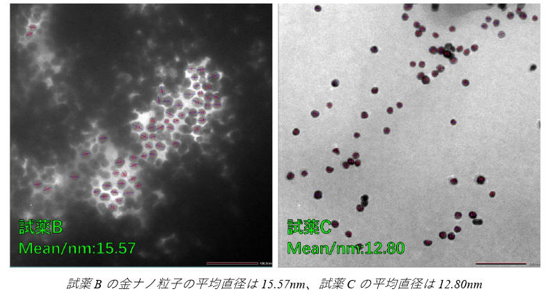
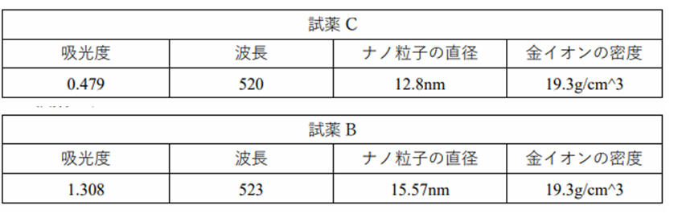

合成金纳米粒子实验
今天我做了一个合成金纳米粒子的实验，用的是柠檬酸还原法。我用紫外-可见分光光度计测量了金纳米粒子的吸收光谱，看看它们的大小和形状有什么关系。我还用王水处理了重金属废液，学习了如何安全地处理危险物质。
我要考察的问题有三个：
1）柠檬酸钠的浓度变化会导致金纳米粒子的大小不同的原因。
2）反应的化学方程式。
3）浓度和反应速度的关系。
我先准备了实验所需的器具，然后分别制备了不同浓度的金盐溶液和柠檬酸钠溶液。我把金盐溶液加热到沸腾，然后快速地加入柠檬酸钠溶液。我观察到溶液的颜色从无色变成紫色，这说明金纳米粒子已经形成了。我继续加热15分钟，然后冷却溶液，用紫外-可见分光光度计测量它们的吸收光谱。我还用王水处理了废液，把金离子转化成可溶性的氯金酸。
我制备了12种不同浓度的金纳米粒子溶液，分别用A到L标记。由于时间原因，我没有测量J、K、L三种溶液的吸收光谱。我根据分子量和体积计算了每种溶液中金盐和柠檬酸钠的摩尔浓度，结果如下表所示。

我发现，除了A以外的所有溶液都有明显的紫色，说明金纳米粒子都成功地合成了。我用反应时间来表示反应速度，也就是从无色变成紫色所需的时间。我从录制的视频中测量了反应时间，结果如下表所示。

我还用紫外-可见分光光度计测量了各种溶液的吸收光谱，看看它们的吸收峰在什么波长处。我发现，A、D、G三种溶液没有形成稳定的分散体系，所以没有得到有效的光谱。B、E、H和C、F、I两组溶液的吸收光谱如下图所示。

我还发现，A溶液在加热时又变成了无色，出现了灰色的沉淀物。我重复了两次实验，结果都是一样的。如下图所示，A溶液和B溶液有明显的区别。A溶液几乎是无色的，有灰色的沉淀物。B溶液和其他溶液都是紫色的。

我用TDM显微镜观察了B和C两种溶液中的金纳米粒子的形状和大小，测量了它们的平均直径。结果如下图所示，B溶液中的金纳米粒子的平均直径是15.57nm，C溶液中的平均直径是12.80nm。

我根据金纳米粒子的大小和吸光度，计算了它们的吸光系数。结果如下表所示。

我还回答了以下几个问题：
1）
为什么溶液会出现这样的颜色变化？
溶液会出现这样的颜色变化，是因为金纳米粒子的表面等离子体共振（surface
plasmon resonance，SPR）现象。金纳米粒子的表面电子会受到入射光的激发，产生共振振荡，吸收特定波长的光，反射其他波长的光，从而呈现出不同的颜色。金纳米粒子的大小、形状、分散度和介质环境都会影响它们的SPR特性，导致颜色变化。
2）
为什么A溶液不能分散？
A溶液不能分散，是因为金盐和柠檬酸钠的浓度都过高，导致溶剂的量不足，溶液中的离子浓度过高，产生了强烈的静电排斥力，使得金纳米粒子无法稳定地分散在溶液中，而是聚集成沉淀物。这种静电排斥力是范德华力（van
der Waals force）的一种，是由于无极性分子之间的瞬时偶极矩相互作用而产生的。
3）
为什么金盐的浓度越高，金纳米粒子的大小越大？
金盐的浓度越高，金纳米粒子的大小越大，是因为金盐的浓度决定了金离子的还原反应速度。金盐浓度越高，还原反应速度越快，生成的金原子数量越多，但是分散在溶液中的金纳米粒子数量却不变，所以每个金纳米粒子都会吸附更多的金原子，从而增大它们的大小。另外，pH值也会影响金纳米粒子的大小，因为pH值会影响柠檬酸钠分子在金纳米粒子表面的吸附力和排列方式，进而影响金纳米粒子的形态和大小。
我参考了以下文献：
高木 誠 『ベーシック分析化学』
日本化学会 『現代界面コロイド化学の基礎』
ウィキペディア（2023
年
4 月
20 日
(木)
10:20 UTC の版）
|